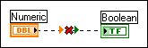

You have wired two terminals that are different types, such as a numeric control to a Boolean indicator, and LabVIEW cannot convert them to the appropriate type.
To correct this error, right-click the object on the front panel and select Replace from the shortcut menu to change the object to a more appropriate type. You also can select the structure or area of the block diagram that contains the broken wire, select Edit»Remove Broken Wires from Selection, and rewire the terminal.